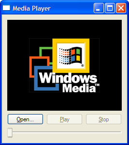
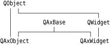
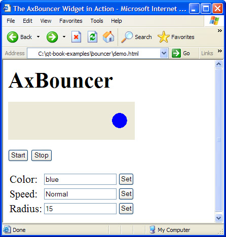

|
|
Microsoft's ActiveX technology allows applications to incorporate user interface components provided by other applications or libraries. It is built on Microsoft COM and defines one set of interfaces for applications that use components and another set of interfaces for applications and libraries that provide components.
The Qt/Windows Desktop Edition provides the ActiveQt framework to seamlessly combine ActiveX and Qt. ActiveQt consists of two modules:
The QAxContainer module allows us to use COM objects and to embed ActiveX controls in Qt applications.
The QAxServer module allows us to export custom COM objects and ActiveX controls written using Qt.
Our first example will embed the Windows Media Player in a Qt application using the QAxContainer module (see Figure 23.3). The Qt application adds an Open button, a Play/Pause button, a Stop button, and a slider to the Windows Media Player ActiveX control.

The application's main window is of type PlayerWindow:
class PlayerWindow : public QWidget
{
Q_OBJECT
Q_ENUMS(ReadyStateConstants)
public:
enum PlayStateConstants { Stopped = 0, Paused = 1, Playing = 2 };
enum ReadyStateConstants { Uninitialized = 0, Loading = 1,
Interactive = 3, Complete = 4 };
PlayerWindow();
protected:
void timerEvent(QTimerEvent *event);
private slots:
void onPlayStateChange(int oldState, int newState);
void onReadyStateChange(ReadyStateConstants readyState);
void onPositionChange(double oldPos, double newPos);
void sliderValueChanged(int newValue);
void openFile();
private:
QAxWidget *wmp;
QToolButton *openButton;
QToolButton *playPauseButton;
QToolButton *stopButton;
QSlider *seekSlider;
QString fileFilters;
int updateTimer;
};
The PlayerWindow class is derived from QWidget. The Q_ENUMS() macro (just below Q_OBJECT) is necessary to tell moc that the ReadyStateConstants type used in the onReadyStateChange() slot is an enum type. In the private section, we declare a QAxWidget * member variable.
PlayerWindow::PlayerWindow()
{
wmp = new QAxWidget;
wmp->setControl("{22D6F312-B0F6-11D0-94AB-0080C74C7E95}");
In the constructor, we start by creating a QAxWidget object to encapsulate the Windows Media Player ActiveX control. The QAxContainer module consists of three classes: QAxObject encapsulates a COM object, QAxWidget encapsulates an ActiveX control, and QAxBase implements the core COM functionality for QAxObject and QAxWidget. The relationships between these classes are illustrated in Figure 23.4.

We call setControl() on the QAxWidget with the class ID of the Windows Media Player 6.4 control. This will create an instance of the required component. From then on, all the properties, events, and methods of the ActiveX control are available as Qt properties, signals, and slots through the QAxWidget object.
The COM data types are automatically converted into the corresponding Qt types, as summarized in Figure 23.5. For example, an in-parameter of type VARIANT_BOOL becomes a bool, and an out-parameter of type VARIANT_BOOL becomes a bool &. If the resulting type is a Qt class (QString, QDateTime, etc.), the in-parameter is a const reference (e.g., const QString &).
| COM Types | Qt Types |
|---|---|
| VARIANT_BOOL | bool |
| char, short, int, long | int |
| unsigned char, unsigned short, unsigned int, unsigned long | uint |
| float, double | double |
| CY | qlonglong, qulonglong |
| BSTR | QString |
| DATE | QDateTime, QDate, QTime |
| OLE_COLOR | QColor |
| SAFEARRAY(VARIANT) | QList<QVariant> |
| SAFEARRAY(BSTR) | QStringList |
| SAFEARRAY(BYTE) | QByteArray |
| VARIANT | QVariant |
| IFontDisp * | QFont |
| IPictureDisp * | QPixmap |
| User defined type | QRect, QSize, QPoint |
To obtain the list of the properties, signals, and slots available in a QAxObject or QAxWidget with their Qt data types, call QAxBase::generateDocumentation() or use Qt's dumpdoc command-line tool, located in Qt's tools\activeqt\dumpdoc directory.
Let's continue with the PlayerWindow constructor:
wmp->setProperty("ShowControls", false);
wmp->setSizePolicy(QSizePolicy::Expanding, QSizePolicy::Expanding);
connect(wmp, SIGNAL(PlayStateChange(int, int)),
this, SLOT(onPlayStateChange(int, int)));
connect(wmp, SIGNAL(ReadyStateChange(ReadyStateConstants)),
this, SLOT(onReadyStateChange(ReadyStateConstants)));
connect(wmp, SIGNAL(PositionChange(double, double)),
this, SLOT(onPositionChange(double, double)));
After calling QAxWidget::setControl(), we call QObject::setProperty() to set the ShowControls property of the Windows Media Player to false, since we provide our own buttons to manipulate the component. QObject::setProperty() can be used both for COM properties and for normal Qt properties. Its second parameter is of type QVariant.
Next, we call setSizePolicy() to make the ActiveX control take all the available space in the layout, and we connect three ActiveX events from the COM component to three slots.
...
stopButton = new QToolButton;
stopButton->setText(tr("&Stop"));
stopButton->setEnabled(false);
connect(stopButton, SIGNAL(clicked()), wmp, SLOT(Stop()));
...
}
The rest of the PlayerWindow constructor follows the usual pattern, except that we connect some Qt signals to slots provided by the COM object (Play(), Pause(), and Stop()). Since the buttons are similar, we have shown only the Stop button's implementation here.
Let's leave the constructor and look at the timerEvent() function:
void PlayerWindow::timerEvent(QTimerEvent *event)
{
if (event->timerId() == updateTimer) {
double curPos = wmp->property("CurrentPosition").toDouble();
onPositionChange(-1, curPos);
} else {
QWidget::timerEvent(event);
}
}
The timerEvent() function is called at regular intervals while a media clip is playing. We use it to advance the slider. This is done by calling property() on the ActiveX control to obtain the value of the CurrentPosition property as a QVariant and calling toDouble() to convert it to a double. We then call onPositionChange() to perform the update.
We will not review the rest of the code because most of it isn't directly relevant to ActiveX and doesn't show anything that we haven't covered already. The code is included with the book's examples.
In the .pro file, we need this entry to link with the QAxContainer module:
CONFIG += qaxcontainer
One frequent need when dealing with COM objects is to be able to call a COM method directly (as opposed to connecting it to a Qt signal). The easiest way to do this is to invoke QAxBase::dynamicCall() with the name and signature of the method as the first parameter and the arguments to the method as additional parameters. For example:
wmp->dynamicCall("TitlePlay(uint)", 6);
The dynamicCall() function takes up to eight parameters of type QVariant and returns a QVariant. If we need to pass an IDispatch * or an IUnknown * this way, we can encapsulate the component in a QAxObject and call asVariant() on it to convert it to a QVariant. If we need to call a COM method that returns an IDispatch * or an IUnknown *, or if we need to access a COM property of one of those types, we can use querySubObject() instead:
QAxObject *session = outlook.querySubObject("Session");
QAxObject *defaultContacts =
session->querySubObject("GetDefaultFolder(OlDefaultFolders)",
"olFolderContacts");
If we want to call methods that have unsupported data types in their parameter list, we can use QAxBase::queryInterface() to retrieve the COM interface and call the method directly. As usual with COM, we must call Release() when we have finished using the interface. If we often need to call such methods, we can subclass QAxObject or QAxWidget and provide member functions that encapsulate the COM interface calls. Be aware that QAxObject and QAxWidget subclasses cannot define their own properties, signals, or slots.
We will now review the QAxServer module. This module enables us to turn a standard Qt program into an ActiveX server. The server can be either a shared library or a stand-alone application. Servers built as shared libraries are often called in-process servers; stand-alone applications are called out-of-process servers.
Our first QAxServer example is an in-process server that provides a widget that shows a ball bouncing left and right. We will also see how to embed the widget in Internet Explorer.
Here's the beginning of the class definition of the AxBouncer widget:
class AxBouncer : public QWidget, public QAxBindable
{
Q_OBJECT
Q_ENUMS(SpeedValue)
Q_PROPERTY(QColor color READ color WRITE setColor)
Q_PROPERTY(SpeedValue speed READ speed WRITE setSpeed)
Q_PROPERTY(int radius READ radius WRITE setRadius)
Q_PROPERTY(bool running READ isRunning)
AxBouncer, shown in Figure 23.6, is derived from both QWidget and QAxBindable. The QAxBindable class provides an interface between the widget and an ActiveX client. Any QWidget can be exported as an ActiveX control, but by subclassing QAxBindable we can notify the client when a property's value changes, and we can implement COM interfaces to supplement those already implemented by QAxServer.

When doing multiple inheritance involving a QObject-derived class, we must always put the QObject-derived class first so that moc can pick it up.
We declare three read-write properties and one read-only property. The Q_ENUMS() macro is necessary to tell moc that the SpeedValue type is an enum type. The enum is declared in the public section of the class:
public:
enum SpeedValue { Slow, Normal, Fast };
AxBouncer(QWidget *parent = 0);
void setSpeed(SpeedValue newSpeed);
SpeedValue speed() const { return ballSpeed; }
void setRadius(int newRadius);
int radius() const { return ballRadius; }
void setColor(const QColor &newColor);
QColor color() const { return ballColor; }
bool isRunning() const { return myTimerId != 0; }
QSize sizeHint() const;
QAxAggregated *createAggregate();
public slots:
void start();
void stop();
signals:
void bouncing();
The AxBouncer constructor is a standard constructor for a widget, with a parent parameter. The QAXFACTORY_DEFAULT() macro, which we will use to export the component, expects a constructor with this signature.
The createAggregate() function is reimplemented from QAxBindable. We will explain it in a moment.
protected:
void paintEvent(QPaintEvent *event);
void timerEvent(QTimerEvent *event);
private:
int intervalInMilliseconds() const;
QColor ballColor;
SpeedValue ballSpeed;
int ballRadius;
int myTimerId;
int x;
int delta;
};
The protected and private sections of the class are the same as those we would have if this was a standard Qt widget.
AxBouncer::AxBouncer(QWidget *parent)
: QWidget(parent)
{
ballColor = Qt::blue;
ballSpeed = Normal;
ballRadius = 15;
myTimerId = 0;
x = 20;
delta = 2;
}
The AxBouncer constructor initializes the class's private variables.
void AxBouncer::setColor(const QColor &newColor)
{
if (newColor != ballColor && requestPropertyChange("color")) {
ballColor = newColor;
update();
propertyChanged("color");
}
}
The setColor() function sets the value of the color property. It calls update() to repaint the widget.
The unusual part is the requestPropertyChange() and propertyChanged() calls. These functions are inherited from QAxBindable and should ideally be called whenever we change a property. The requestPropertyChange() asks the client's permission to change a property, and returns true if the client allows the change. The propertyChanged() function notifies the client that the property has been changed.
The setSpeed() and setRadius() setters also follow this pattern, and so do the start() and stop() slots, since they change the value of the running property.
One interesting AxBouncer member function is left:
QAxAggregated *AxBouncer::createAggregate()
{
return new ObjectSafetyImpl;
}
The createAggregate() function is reimplemented from QAxBindable. It allows us to implement COM interfaces that the QAxServer module doesn't already implement or to bypass QAxServer's default COM interfaces. Here, we do it to provide the IObjectSafety interface, which Internet Explorer uses to access a component's safety options. This is the standard trick to get rid of Internet Explorer's infamous "Object not safe for scripting" error message.
Here's the definition of the class that implements the IObjectSafety interface:
class ObjectSafetyImpl : public QAxAggregated, public IObjectSafety
{
public:
long queryInterface(const QUuid &iid, void **iface);
QAXAGG_IUNKNOWN
HRESULT WINAPI GetInterfaceSafetyOptions(REFIID riid,
DWORD *pdwSupportedOptions, DWORD *pdwEnabledOptions);
HRESULT WINAPI SetInterfaceSafetyOptions(REFIID riid,
DWORD pdwSupportedOptions, DWORD pdwEnabledOptions);
};
The ObjectSafetyImpl class is derived from both QAxAggregated and IObjectSafety. The QAxAggregated class is an abstract base class for implementations of additional COM interfaces. The COM object that the QAxAggregated extends is accessible through controllingUnknown(). The QAxServer module creates this COM object behind the scenes.
The QAXAGG_IUNKNOWN macro provides standard implementations of QueryInterface(), AddRef(), and Release(). These implementations simply call the same functions on the controlling COM object.
long ObjectSafetyImpl::queryInterface(const QUuid &iid, void **iface)
{
*iface = 0;
if (iid == IID_IObjectSafety) {
*iface = static_cast<IObjectSafety *>(this);
} else {
return E_NOINTERFACE;
}
AddRef();
return S_OK;
}
The queryInterface() function is a pure virtual function of QAxAggregated. It is called by the controlling COM object to give access to the interfaces provided by the QAxAggregated subclass. We must return E_NOINTERFACE for interfaces that we don't implement and for IUnknown.
HRESULT WINAPI ObjectSafetyImpl::GetInterfaceSafetyOptions(
REFIID /* riid */, DWORD *pdwSupportedOptions,
DWORD *pdwEnabledOptions)
{
*pdwSupportedOptions = INTERFACESAFE_FOR_UNTRUSTED_DATA
| INTERFACESAFE_FOR_UNTRUSTED_CALLER;
*pdwEnabledOptions = *pdwSupportedOptions;
return S_OK;
}
HRESULT WINAPI ObjectSafetyImpl::SetInterfaceSafetyOptions(
REFIID /* riid */, DWORD /* pdwSupportedOptions */,
DWORD /* pdwEnabledOptions */)
{
return S_OK;
}
The GetInterfaceSafetyOptions() and SetInterfaceSafetyOptions() functions are declared in IObjectSafety. We implement them to tell the world that our object is safe for scripting.
Let's now review main.cpp:
#include <QAxFactory>
#include"axbouncer.h"
QAXFACTORY_DEFAULT(AxBouncer,
"{5e2461aa-a3e8-4f7a-8b04-307459a4c08c}",
"{533af11f-4899-43de-8b7f-2ddf588d1015}",
"{772c14a5-a840-4023-b79d-19549ece0cd9}",
"{dbce1e56-70dd-4f74-85e0-95c65d86254d}",
"{3f3db5e0-78ff-4e35-8a5d-3d3b96c83e09}")
The QAXFACTORY_DEFAULT() macro exports an ActiveX control. We can use it for ActiveX servers that export only one control. The next example in this section will show how to export many ActiveX controls.
The first argument to QAXFACTORY_DEFAULT() is the name of the Qt class to export. This is also the name under which the control is exported. The other five arguments are the class ID, the interface ID, the event interface ID, the type library ID, and the application ID. We can use standard tools such as guidgen or uuidgen to generate these identifiers. Because the server is a library, we don't need a main() function.
Here's the .pro file for our in-process ActiveX server:
TEMPLATE = lib
CONFIG += dll qaxserver
HEADERS = axbouncer.h \
objectsafetyimpl.h
SOURCES = axbouncer.cpp \
main.cpp \
objectsafetyimpl.cpp
RC_FILE = qaxserver.rc
DEF_FILE = qaxserver.def
The qaxserver.rc and qaxserver.def files referred to in the .pro file are standard files that can be copied from Qt's src\activeqt\control directory.
The makefile or Visual C++ project file generated by qmake contains rules to register the server in the Windows registry. To register the server on end-user machines, we can use the regsvr32 tool available on all Windows systems.
We can then include the Bouncer component in an HTML page using the <object> tag:
<object id="AxBouncer"
classid="clsid:5e2461aa-a3e8-4f7a-8b04-307459a4c08c">
<b>The ActiveX control is not available. Make sure you have built and
registered the component server.</b>
</object>
We can create buttons that invoke slots:
<input type="button" value="Start" onClick="AxBouncer.start()"> <input type="button" value="Stop" onClick="AxBouncer.stop()">
We can manipulate the widget using JavaScript or VBScript just like any other ActiveX control. See the demo.html file included with the book's examples for a rudimentary page that uses the ActiveX server.
Our last example is a scriptable Address Book application. The application can serve as a standard Qt/Windows application or an out-of-process ActiveX server. The latter possibility allows us to script the application using, say, Visual Basic.
class AddressBook : public QMainWindow
{
Q_OBJECT
Q_PROPERTY(int count READ count)
Q_CLASSINFO("ClassID", "{588141ef-110d-4beb-95ab-ee6a478b576d}")
Q_CLASSINFO("InterfaceID", "{718780ec-b30c-4d88-83b3-79b3d9e78502}")
Q_CLASSINFO("ToSuperClass", "AddressBook")
public:
AddressBook(QWidget *parent = 0);
~AddressBook();
int count() const;
public slots:
ABItem *createEntry(const QString &contact);
ABItem *findEntry(const QString &contact) const;
ABItem *entryAt(int index) const;
private slots:
void addEntry();
void editEntry();
void deleteEntry();
private:
void createActions();
void createMenus();
QTreeWidget *treeWidget;
QMenu *fileMenu;
QMenu *editMenu;
QAction *exitAction;
QAction *addEntryAction;
QAction *editEntryAction;
QAction *deleteEntryAction;
};
The AddressBook widget is the application's main window. The widget's property and its public slots will be available for scripting. The Q_CLASSINFO() macro is used to specify the class and interface IDs associated with the class. These were generated using a tool such as guid or uuid.
In the previous example, we specified the class and interface IDs when we exported the QAxBouncer class using the QAXFACTORY_DEFAULT() macro. In this example, we want to export several classes, so we cannot use QAXFACTORY_DEFAULT(). Two options are available to us:
We can subclass QAxFactory, reimplement its virtual functions to provide information about the types we want to export, and use the QAXFACTORY_EXPORT() macro to register the factory.
We can use the QAXFACTORY_BEGIN(), QAXFACTORY_END(), QAXCLASS(), and QAXTYPE() macros to declare and register the factory. This approach requires us to specify the class and interface IDs using Q_CLASSINFO().
Back to the AddressBook class definition: The third occurrence of Q_CLASSINFO() may seem a bit mysterious. By default, ActiveX controls expose not only their own properties, signals, and slots to clients, but also those of their ancestors up to QWidget. The ToSuperClass attribute lets us specify the highest ancestor in the inheritance tree that we want to expose. Here, we specify the class name of the component (AddressBook) as the highest ancestor to export, meaning that properties, signals, and slots inherited from AddressBook's own ancestors will not be exported.
class ABItem : public QObject, public QTreeWidgetItem
{
Q_OBJECT
Q_PROPERTY(QString contact READ contact WRITE setContact)
Q_PROPERTY(QString address READ address WRITE setAddress)
Q_PROPERTY(QString phoneNumber READ phoneNumber
WRITE setPhoneNumber)
Q_CLASSINFO("ClassID", "{bc82730e-5f39-4e5c-96be-461c2cd0d282}")
Q_CLASSINFO("InterfaceID", "{c8bc1656-870e-48a9-9937-fbe1ceff8b2e}")
Q_CLASSINFO("ToSuperClass", "ABItem")
public:
ABItem(QTreeWidget *treeWidget);
void setContact(const QString &contact);
QString contact() const { return text(0); }
void setAddress(const QString &address);
QString address() const { return text(1); }
void setPhoneNumber(const QString &number);
QString phoneNumber() const { return text(2); }
public slots:
void remove();
};
The ABItem class represents one entry in the address book. It is derived from QTreeWidgetItem so that it can be shown in a QTreeWidget and from QObject so that it can be exported as a COM object.
int main(int argc, char *argv[])
{
QApplication app(argc, argv);
if (!QAxFactory::isServer()) {
AddressBook addressBook;
addressBook.show();
return app.exec();
}
return app.exec();
}
In main(), we check whether the application is being run stand-alone or as a server. The -activex command-line option is recognized by QApplication and makes the application run as a server. If the application isn't run as a server, we create the main widget and show it as we would normally do in any stand-alone Qt application.
In addition to -activex, ActiveX servers understand the following command-line options:
-regserver registers the server in the system registry.
-unregserver unregisters the server from the system registry.
-dumpidl file.idl writes the server's IDL to the specified file.
When the application is run as a server, we must export the AddressBook and ABItem classes as COM components:
QAXFACTORY_BEGIN("{2b2b6f3e-86cf-4c49-9df5-80483b47f17b}",
"{8e827b25-148b-4307-ba7d-23f275244818}")
QAXCLASS(AddressBook)
QAXTYPE(ABItem)
QAXFACTORY_END()
The preceding macros export a factory for creating COM objects. Since we want to export two types of COM objects, we cannot simply use QAXFACTORY_DEFAULT() as we did in the previous example.
The first argument to QAXFACTORY_BEGIN() is the type library ID; the second argument is the application ID. Between QAXFACTORY_BEGIN() and QAXFACTORY_END(), we specify all the classes that can be instantiated and all the data types that we want to make accessible as COM objects.
This is the .pro file for our out-of-process ActiveX server:
TEMPLATE = app
CONFIG += qaxserver
HEADERS = abitem.h \
addressbook.h \
editdialog.h
SOURCES = abitem.cpp \
addressbook.cpp \
editdialog.cpp \
main.cpp
FORMS = editdialog.ui
RC_FILE = qaxserver.rc
The qaxserver.rc file referred to in the .pro file is a standard file that can be copied from Qt's src\activeqt\control directory.
Look in the example's vb directory for a Visual Basic project that uses the Address Book server.
This completes our overview of the ActiveQt framework. The Qt distribution includes additional examples, and the documentation contains information about how to build the QAxContainer and QAxServer modules and how to solve common interoperability issues.
|
|
| Converted from CHM to HTML with chm2web Pro 2.85 (unicode) |